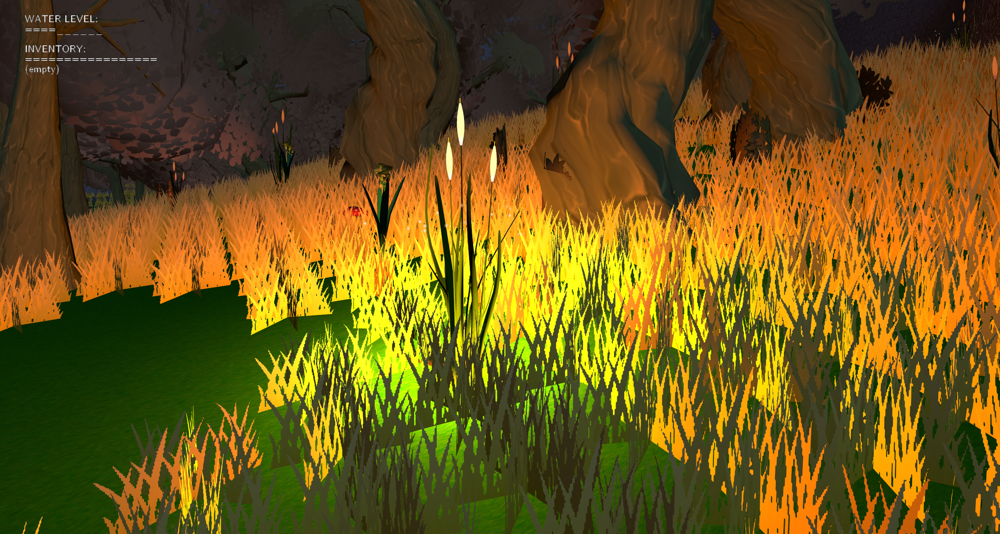
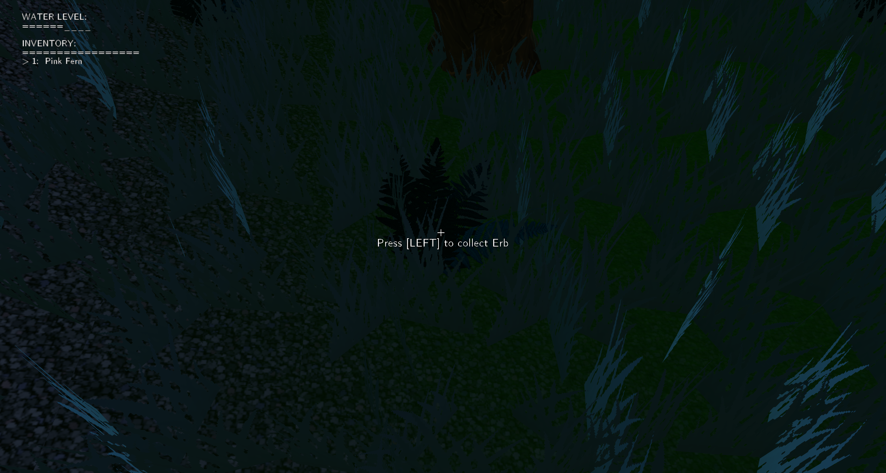
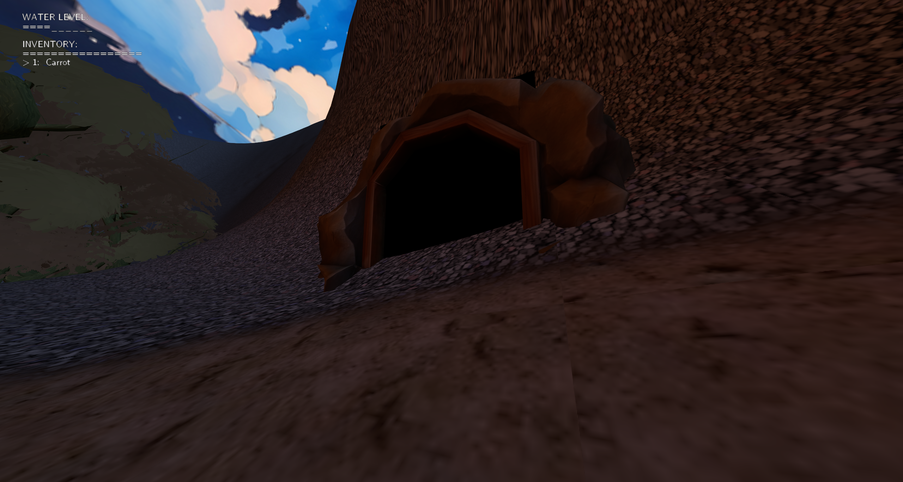
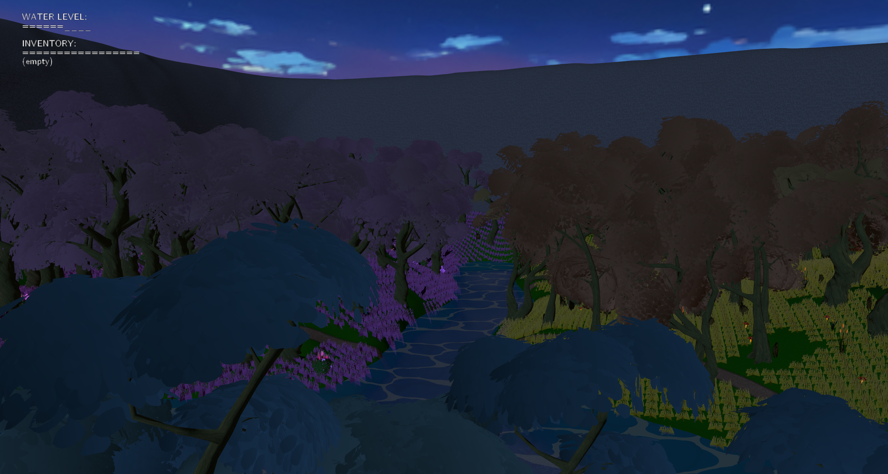

Enchanted Forest
A stroll through the forest
- Role
- Programmer, Texture Artist
- Team
- 3 developers
- Duration
- 4 months
- Engine
- Vulkan, C++
Gallery


Overview
Enchanted Forest Wanderer is a first-person exploration game built entirely in Vulkan, where you get dropped into a forest in the middle of the night and have to light your own way through it. Water the glowing plants to push the dark back, eat the mushrooms scattered around to shrink yourself small enough to fit where you normally couldn't, and do favors for the creatures living in the woods until the cave in the mountainside finally lets you in to grab the treasure!
This one was made for the Computer Graphics course, which meant no engine, no editor, and nothing on screen that didn't come out of the project's own code, so every tree, every light and every single letter of text had to go through the graphics API by hand. I came in as a programmer and ended up fixing a lot of the 3D models and textures too, since I wanted to create a cohesive visual style by putting together many different sources.
Lighting the forest
The forest starts off almost pitch black, and the only way to see anything at all is to spend the water you're carrying on the big glowing plants growing between the trees. Every time you water one, its emissive texture gets multiplied up a step and a point light gets stuck to it and it starts throwing colored light onto the trunks and the ground around it.
This wouldn't have been an issue if not for the fact that the shader can only hold sixteen lights at once before it impacts performance, and you'll walk past far more than sixteen plants in a single run. I could have just capped how many you're allowed to light, but I couldn't have predicted which lights would be used by the player, and I couldn't risk leaving them in the dark, so I treated the light array as a queue instead, meaning the second it fills up, the oldest plant quietly loses its light and gets its original texture back.

Sitting on top of every lit plant is a swarm of fireflies, a pool of up to 256 little billboarded motes that get handed out to whichever plants happen to be glowing at that moment. They're spread around the plant using the golden ratio and each one drifts on its own offset and blinks on its own timing so they never pulse all together, and the whole swarm gets brighter the more you've watered the plant. Not one of them is a real light, since they're there purely to make a lit plant feel alive.
A chain of favors
Finding the treasure was never going to be the hard part, since the cave it's sitting in is blocked off by a tarantula who's made herself comfortable right in the doorway, and getting rid of her means going through every other creature in the forest first. You pick a herb and feed it to the unicorn, who gives you a carrot, you feed the carrot to the rabbit, who gives you a poisonous potato, which is just the thing you need to get rid of that annoying arachnid.
Actually knowing where to go is handled by the trails cut through the forest, which live in the code as four lists of coordinates, one for every leg of the quest: spawn to the unicorn, unicorn to the rabbit, spawn to the rabbit for anyone who stumbles onto him first, and rabbit to the spider. Every node in those lists is nothing more than an x, a z and a half width saying how wide the trail ought to be at that exact spot, which lets a path swell out into a clearing and narrow back down to a track without anyone having to model a single thing.
Those nodes then get run through a Catmull-Rom spline, which passes through every waypoint, rounding the corners into something that looks walked. When the world generation asks whether a spot sits on a trail it gets back the distance to the closest lane along with that lane's half width right there, and anywhere the answer comes back yes, no tree, plant, herb or mushroom is allowed to spawn, which is the whole reason the trails stay walkable. The terrain texture reads from the same network and feathers the dirt into the grass over a couple of units at the edges, so the paths come out looking worn in rather than painted on.

Playing with the field of view and height of the player was part of the plan from the very beginning, so the idea was to put a rabbit in a burrow under the mountain that you could only reach if you ate a mushroom and shrank yourself down first. Actually getting you down there was the troublesome part, because the terrain is a heightmap, and a heightmap only ever knows one height for any point on the map, meaning there is simply no way to have ground above your head. I could have layered a second surface underneath the first and then taught the collision, the texturing and the world generation which of the two they were standing on, but that's an awful lot of work to pour into one burrow with a rabbit sitting in it.
So, the game cheats! The archway is really just a trigger disc that drops you into a burrow buried five hundred units below the forest where nothing else lives, built at a scale that matches how small you are by the time you get there, and stepping back onto the pad you spawned on sends you straight back out beside the archway. The only real headache was the triggers firing the instant they caught you, which kept bouncing the player back through the door they'd just walked through, so each end of the portal got an armed flag that only resets once you've stepped off of it.

The tarantula is a different problem altogether, since she isn't hiding anything underground and has just made herself comfortable in the mouth of a cave carved into the mountainside. That cave is a hollow ring of rock with one gap cut into it, and whether you're allowed through comes down to an angular check against the direction the doorway is facing, which meant that sealing it shut while she was still alive was as easy as flipping a boolean and letting the whole ring go solid.
Growing a forest
Not a single tree in that forest was placed by hand. They get laid out on a grid with a random offset shoving each one off its own cell so the rows never actually read as rows, and then every spot has to survive a whole list of checks before anything is allowed to spawn there: it can't sit below the water line or above the rock line, it can't sit on a slope steep enough that the trunk would end up floating in the air, and it can't sit on any of the trails running through the forest, which get queried from a shared path network that the grass and the terrain texture read from as well.
The plants, herbs and mushrooms then get scattered around each tree using those same offsets mirrored, which keeps them clustered close to the trees without ever letting one grow inside a trunk. The forest is also split into three color biomes by a couple of diagonal lines drawn across the world, so the plants you come across shift from pink to yellow to blue depending on which wedge of the map you've wandered into. And the map model itself from which I read the heightmap was obtained using a Blender plugin to generate terrains, which I then modeled with sculpting tools.
